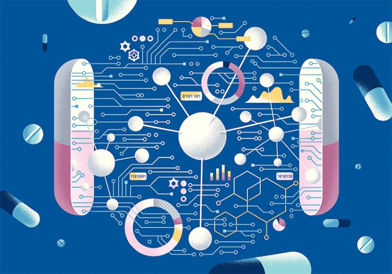

Exploring the latest advancements in artificial intelligence and pharmaceutical research.
ℹ️ About This Blog
Welcome to AI & Drug Discovery — a blog dedicated to exploring how artificial intelligence is reshaping the future of pharmaceutical science and biomedical research.
Our mission is to bridge the gap between cutting-edge AI technologies and real-world medical applications. We aim to provide in-depth content that is both scientifically accurate and accessible to researchers, students, healthcare professionals, and AI enthusiasts.
In this blog, you’ll find:
🔬 Articles on AI-driven drug design, repurposing, and predictive modeling
📊 Case studies and success stories from the pharmaceutical industry
🧠 Insights into machine learning, deep learning, and data science in medicine
💡 Discussions on ethics, data quality, and the future of AI in healthcare
Whether you're a data scientist exploring biotech, a chemist curious about automation, or a student passionate about AI in life sciences — this blog is for you.
Thank you for joining us on this journey at the intersection of science, technology, and innovation.
Latest Articles
The Role of AI in Drug Discovery: Challenges, Opportunities, and Strategies
Artificial intelligence (AI) has the potential to revolutionize the drug discovery process, offering improved efficiency, accuracy, and speed. However, the successful application of AI is dependent on the availability of high-quality data, the addressing of ethical concerns, and the recognition of the limitations of AI-based approaches. In this article, the benefits, challenges, and drawbacks of AI in this field are reviewed, and possible strategies and approaches for overcoming the present obstacles are proposed. The use of data augmentation, explainable AI, and the integration of AI with traditional experimental methods, as well as the potential advantages of AI in pharmaceutical research, are also discussed. Overall, this review highlights the potential of AI in drug discovery and provides insights into the challenges and opportunities for realizing its potential in this field.
Note from the human authors: This article was created to test the ability of ChatGPT, a chatbot based on the GPT-3.5 language model, in terms of assisting human authors in writing review articles. The text generated by the AI following our instructions (see Supporting Information) was used as a starting point, and its ability to automatically generate content was evaluated. After conducting a thorough review, the human authors practically rewrote the manuscript, striving to maintain a balance between the original proposal and the scientific criteria. The advantages and limitations of using AI for this purpose are discussed in the last section.
Keywords: artificial intelligence; drug discovery; AI-assisted content generation; AI-limitations
1. Methods for Writing this Paper
This paper was generated with the assistance of ChatGPT, a chatbot based on the GPT-3.5 language model, trained with a large corpus of text via OpenAI [1], which at that time did not have connection to the Internet. This tool is a natural language processing system, released on 30 November 2022, which is able to generate human-like text based on the inputs provided to it. For the purposes of this paper, the human authors provided the input, including the topic of the paper (the use of AI in drug discovery) and the number of sections to be considered, as well as the specific prompts and instructions for each section. The pieces of text generated by the AI were edited to correct and enrich the content, and to avoid repetitions and inconsistencies. All the references suggested by the AI were also revised. The final version of this work resulted from an iterative process of revisions by the human authors, assisted by the AI. The total percentage of similarity between the preliminary text, obtained directly from ChatGPT, and the current version of the manuscript is: identical 4.3%, minor changes 13.3%, and related meaning 16.3% [2]. The percentage of correct references in the preliminary text, obtained directly from ChatGPT, was just 6%. The original version generated by ChatGPT, along with the inputs used to create it, are included in the Supporting Information. The manuscript was first made public as a preprint on 8 December 2022 (https://doi.org/10.48550/arXiv.2212.08104). The image from the abstract was generated with DALL-E https://labs.openai.com/e/f9L5L4yGx1QFFeL5zHzHWNvI (Accessed on 6 December 2022).
2. Introduction to AI and Its Potential for Use in Drug Discovery
The use of artificial intelligence (AI) in medicinal chemistry has gained significant attention in recent years as a potential means of revolutionizing the pharmaceutical industry [3]. Drug discovery, the process of identifying and developing new medications, is a complex and time-consuming endeavor that traditionally relies on labor-intensive techniques, such as trial-and-error experimentation and high-throughput screening. However, AI techniques such as machine learning (ML) and natural language processing offer the potential to accelerate and improve this process by enabling more efficient and accurate analysis of large amounts of data [4]. The successful use of deep learning (DL) to predict the efficacy of drug compounds with high accuracy has been described recently by the authors of [5]. AI-based methods have also been able to predict the toxicity of drug candidates [6]. These and other research efforts have highlighted the capacity of AI to improve the efficiency and effectiveness of drug discovery processes. However, the use of AI in developing new bioactive compounds is not without challenges and limitations. Ethical considerations must be taken into account, and further research is needed to fully understand the advantages and limitations of AI in this area [7]. Despite these challenges, AI is expected to significantly contribute to the development of new medications and therapies in the next few years.
3. Limitations of the Current Methods in Drug Discovery
Currently, medicinal chemistry methods rely heavily on a hit-and-miss approach and large-scale testing techniques [8]. These techniques involve examining large numbers of potential drug compounds, in order to identify those with the desired properties. However, these methods can be slow, costly, and often yield results with low accuracy [6]. In addition, they can be limited by the availability of suitable test compounds and the difficulty of accurately predicting their behavior in the body [9].
4. The Role of ML in Predicting Drug Efficacy and Toxicity
One of the key applications of AI in medicinal chemistry is the prediction of the efficacy and toxicity of potential drug compounds. Classical protocols of drug discovery often rely on labor-intensive and time-consuming experimentation to assess the potential effects of a compound on the human body. This can be a slow and costly process, and the results are often uncertain and subject to a high degree of variability. AI techniques such as ML are able to overcome these limitations. Based on the analysis of a large amount of information, ML algorithms can identify patterns and trends that may not be apparent to human researchers.
5. The Impact of AI on the Drug Discovery Process and Potential Cost Savings
Another key application of AI in drug discovery is the design of novel compounds with specific properties and activities. Traditional methods often rely on the identification and modification of existing compounds, which can be a slow and labor-intensive process. AI-based approaches, on the other hand, can enable the rapid and efficient design of novel compounds with desirable properties and activities.
6. Case Studies of Successful AI-Aided Drug Discovery Efforts
The potential of AI in the context of drug discovery has been demonstrated in several case studies. For example, the successful use of AI to identify novel compounds for the treatment of cancer has recently been reported by Gupta, R., et al. [21]. These authors trained a DL algorithm on a large dataset of known cancer-related compounds and their corresponding biological activity. As an output, novel compounds with high potential for future cancer treatment were obtained.
7. The Role of Collaboration between AI Researchers and Pharmaceutical Scientists
The role of collaboration between AI researchers and pharmaceutical scientists is crucial in the development of innovative and effective treatments for various diseases. By combining their expertise and knowledge, they can create powerful algorithms and machine-learning models intended to predict the efficacy of potential drug candidates and speed up the drug discovery process.
8. Challenges and Limitations of Using AI in Drug Discovery
Despite the potential benefits of AI in drug discovery, there are several challenges and limitations that must be considered. One of the key challenges is the availability of suitable data [40]. AI-based approaches typically require a large volume of information for training purposes [41]. In many cases, the amount of data that is accessible may be limited, or the data may be of low quality or inconsistent, which can affect the accuracy and reliability of the results [10].

AI in Drug Repurposing for New Medical Indications
1. Introduction
Drug repurposing (also called drug repositioning, reprofiling, redirecting, and drug rediscovery [Citation1]) is a strategy for identifying new therapeutic purposes for approved drugs in medical indications beyond the scope of their original therapeutic use [Citation2]. Drug repurposing offers various advantages over the de-novo development of entirely new drugs, including the possibility to speed-up the discovery process and to reduce failure rates in the clinical development and testing phases [Citation3]. In particular, drug repurposing makes it possible to avoid safety evaluation in preclinical models and humans, hence leading to potentially lower overall development costs, if the safety testing has been completed for the original indication and it displays dose-compatibility with the new indication. Traditionally, drug repurposing success stories have mainly resulted from largely opportunistic and serendipitous findings [Citation4]; for example, sildenafil citrate was originally developed as an antihypertensive drug, but later repurposed by Pfizer and marketed as Viagra for the treatment of erectile dysfunction based on retrospective clinical experience, leading to massive worldwide sales.
Over recent years, a number of computational approaches have been developed for a more systematic drug repurposing process. Popular information sources for in-silico drug repurposing include, for instance, electronic health records, genome-wide association analyses or gene expression response profiles, pathway mappings, compound structures, target-binding assays, and other phenotypic profiling data [Citation4]. Several systematic review articles on the use of computational approaches are available [Citation4], which cover also machine learning (ML) and artificial intelligence (AI) algorithms, such as those based on network propagation, matrix factorization, and completion, as well as recently developed deep learning models [Citation5–8]. Databases and other resources supporting in-silico drug repurposing, such as Drug Repurposing Hub [Citation9] and RepurposeDB [Citation10], have also been recently surveyed [Citation11]. There are also excellent reviews and perspectives on the use of ML and AI approaches in the overall drug discovery and development process [Citation12,Citation13], as well as in the lead optimization or designing of completely new molecules [Citation14].
Our focus here is on supervised ML and AI methods that make use of publicly available databases and information sources. A particular emphasis is placed on the use of comprehensive target activity profiles of drugs as a resource for a systematic repurposing process, in which an existing drug is found to have an off-target effect or a newly recognized on-target effect for a new indication, hence providing sufficient evidence to take it forward for further development and commercial exploitation. Such target-based drug repurposing makes use of the fact that most drugs are not specific for any single target, but rather display a wide spectrum of target activity. In cancer applications, some of the unintended off-targets correspond to known anticancer targets, while others may reveal new cancer vulnerabilities [Citation15]. However, we note that drug repurposing is not by any means limited to anticancer applications alone, but covers various medical indications [Citation16]. For instance, a recent review surveyed how existing drugs may have activity against SARS-CoV-2 to be readily applied to treat COVID-19 patients [Citation17,Citation18]. Similarly, target repositioning [Citation19] can be used in the field of infectious diseases, where a drug is used to inhibit the ortholog target proteins in other species [Citation20,Citation21].
The repurposing process is often initiated after phenotypic observations of adventitious polypharmacological drug activities. For instance, we observed a surprising activity for axitinib, an endothelial growth factor receptor (VEGFR) inhibitor approved for advanced renal cell carcinoma, in primary chronic myeloid leukemia (CML) and acute lymphoblastic leukemia (ALL) cells [Citation22]. Since these cancers are driven by the oncogenic BCR-ABL1 fusion protein, we hypothesized that axitinib might bind to BCR-ABL1. This was confirmed by structural and functional analysis, and interestingly, axitinib bound to T315I-mutated BCR-ABL1 with roughly 40 times higher affinity than to the wild-type BCR-ABL1. Currently, axitinib is being investigated in an alternating regimen with bosutinib for CML patients (NCT02782403). Subsequent reports, however, have indicated that axitinib may lose potency when additional compound mutations emerge in BCR-ABL1 [Citation23], and the drug does not seem to be effective against ponatinib-resistant T315I-mutated cells [Citation24]. These observations raise the question whether one could use AI algorithms to predict at least some of the potential drawbacks already before the repurposing process enters the clinical stage.
2. Data resources for in-silico drug repurposing
We start by going through selected data and information resources that we find useful for in-silico drug repurposing. Rather than providing a systematic review of all developed resources, we mainly focus on information sources motivated by the axitinib repurposing study from the previous section, including resources for drug–target activity data, cell-based pharmacogenomic data, and chemical structure information. For more comprehensive surveys of various data resources, the reader is referred to recent reviews [Citation4–6,Citation11]. We will discuss the use of these resources in Section 3.
2.1. Drug–target interaction resources
Comprehensive knowledge about the intended on-targets and non-intended or so-called off-targets of a drug is important for understanding its underlying mechanism of action (MoA), and for modeling its efficacy or toxicity in various tissue and cancer types. As shown in the motivating example of axitinib study, drug–target activity profiles are highly valuable in drug repurposing [Citation22]. In contrast to proprietary resources, which were used e.g. in Drug Repurposing Hub, we promote here the use of publicly available drug–target activity resources and how these can be useful in training supervised ML models for in-silico off-target predictions and drug repurposing. Table 1 highlights 18 selected compound/target databases, along with various features such as the number of compounds, targets and interactions covered, as well as whether API is provided for programmatic data access for AI-based explorations. For simplicity, we have divided the compound–target activity data types into three categories according the type of activity data they contain: quantitative bioactivity data (e.g. from multi-dose Kd, Ki, or IC50 assays), binary interactions (both active and inactive drug–target pairs), and unary interactions (only active drug–target pairs). These categories determine whether regression or classification algorithms are applicable for the target activity predictions, and whether one has true positive as well as true negative examples for training of the supervised prediction models.
Most of the in-silico DTI prediction studies are based on one of the resources listed in Table 1 [Citation42]. So far, ChEMBL is the most popular target activity resource for regression modeling (i.e. prediction of quantitative drug–target binding affinities). Classification algorithms try to predict whether a drug has sufficient potency against the given target. In addition to the problem formulation (regression vs. classification), we have argued that at least the following factors should be taken into consideration in in-silico target prediction studies to avoid reporting overoptimistic drug–target activity prediction results: (i) multiple evaluation datasets specific to particular drug and target families to evaluate the application domain of the prediction model, (ii) evaluation procedure, where nested cross-validation is preferred over the standard cross-validation, and (iii) prediction problem setting (i.e. whether the training and test sets of compound-target pairs share common drugs and targets, only drugs or targets, or neither, where the latter is often the most challenging case) [Citation43]. Obviously, the more comprehensive is the information present in the databases, e.g. in terms of drug classes and target families, the better coverage the prediction algorithm will have. The predicted target activities should also be experimentally validated before suggesting for drug repurposing [Citation44]. Accordingly, we recently organized an IDG-DREAM Challenge, where the teams used bioactivity data from ChEMBL, DTC, and BindingDB to make quantitative target activity predictions, which were later validated using subsequent experimental assays [Citation42].
2.2. Cell line and patient-derived omics resources
Drug–target bioactivity information offers possibilities to make informed predictions whether the explored compounds have the possibility to modulate a given target or not, and to what extent, but this information is typically cell context independent. However, since the drug MoA is often highly cell context-specific, it is important to actually measure (or predict) the activity of the compound against the cell model or target using cell-based assays. Cell line omics resources contain drug response data along with multi-omics profiles for established cancer cell lines (in vitro models), whereas patient-derived resources include pharmacogenomic information on the patient primary cells tested against various drugs (ex-vivo models). Table 2 lists a selected set of drug response and omics resources, along with additional features, such as number of drugs, cell lines, patient samples, and whether the resource contains API or drug response visualizations, useful for drug repurposing AI-applications.
2.3. Biological pathway information resources
Biological pathways facilitate the understanding of the inner working of the cells and the cellular responses of the drugs, and can therefore aid the drug repurposing efforts. For instance, mapping of the protein targets of drugs either to the same or orthogonal pathways may help to reveal the MoA of both multi-targeted monotherapies and combination therapies. However, various databases may contain different representations of the same biological pathways, which leads to variable results of statistical target pathway enrichment analysis and predictive models in the context of precision medicine [Citation54]. In this section, we highlight six pathway databases that contain information of compound target pathways, along with their characteristics in terms of the number of proteins, compounds, pathways and interactions (Table 3). PathwayCommons [Citation55] and KEGG Pathways [Citation56] are currently the two most comprehensive databases in terms of the number of reactions or interactions. Four out of six pathway databases also provide programmatic access for data using APIs, making them easy for systematic AI model development.
2.4. Chemical structure and protein property data resources
The chemical structural descriptors and target protein properties provide important information for AI and ML models for drug repurposing. There are various online web-servers and toolkits to calculate chemical descriptors for drugs and target properties of proteins. For instance, ChemCPP calculates kernel functions between the compounds [Citation61]. EDragon software computes more than 1600 topological and geometrical descriptors for the chemicals [Citation62]. The Open Babel toolkit provides several useful features including substructure search and calculation of fingerprints of the chemicals [Citation63]. RDKit provides features including 2D depiction, molecular serialization, fingerprint generation, and similarity analysis for the compounds [Citation64]. Finally, PyDPI is python package that computes molecular descriptors for drugs and structural and physiochemical properties for proteins [Citation65].
2.5. Case Study: Sildenafil Citrate
Sildenafil citrate was originally developed by Pfizer under the name "UK-92480" for the treatment of angina and hypertension. However, during clinical trials, it was observed that the drug had a strong effect on erectile function. As a result, Pfizer shifted its focus and repurposed sildenafil for the treatment of erectile dysfunction (ED), branding it as Viagra. This serendipitous discovery is one of the most famous examples of successful drug repurposing.
Sildenafil works by inhibiting the enzyme phosphodiesterase type 5 (PDE5), which is responsible for breaking down cyclic GMP in the smooth muscle cells of the penis. By blocking this enzyme, sildenafil increases cyclic GMP levels, leading to the relaxation of smooth muscle and improved blood flow, thus helping men with erectile dysfunction.
Interestingly, sildenafil's repurposing has not been limited to ED alone. Over the years, researchers have explored its use in treating other conditions, such as pulmonary hypertension, where it has been marketed under the name Revatio. Its potential in treating other vascular disorders is also being studied, making it a model example of how existing drugs can be repurposed for entirely different therapeutic indications.
In addition to its clinical applications, sildenafil also serves as a case study in the drug repurposing field. The success of Viagra highlights the potential of computational tools and artificial intelligence in identifying new therapeutic uses for already approved drugs. By leveraging AI to predict off-target effects and explore alternative indications, the drug repurposing process can be accelerated, reducing both the time and cost associated with developing new treatments.
More Insights in AI & Drug Discovery
AI in Molecular Modeling and Simulation
Molecular modeling using AI can drastically reduce computation time and predict protein-ligand interactions with high precision.
Advances in artificial intelligence, particularly deep learning, are transforming traditional molecular modeling techniques. AI models such as AlphaFold have demonstrated remarkable accuracy in predicting protein structures, dramatically accelerating early-stage drug discovery.
Moreover, molecular dynamics (MD) simulations enhanced by AI are able to sample conformational changes and interaction landscapes faster than brute-force methods. These innovations allow researchers to predict how molecules interact at an atomic level and estimate binding affinities much more efficiently.
AI-based quantum mechanics/molecular mechanics (QM/MM) methods are also emerging, which further increase simulation precision while managing computational cost. The synergy between machine learning and traditional modeling tools is expected to become the backbone of next-generation computational chemistry platforms.
Precision Medicine Through AI
AI enables tailoring of treatments based on patient-specific genetic and molecular profiles.
Precision medicine focuses on customizing healthcare decisions and therapies based on individual variability in genes, environment, and lifestyle. AI systems play a key role in analyzing vast datasets, such as whole-genome sequences and electronic health records, to identify unique patterns that influence disease progression and treatment response.
By leveraging machine learning algorithms, healthcare providers can predict which patients are likely to benefit from specific treatments or suffer side effects. AI is also used to stratify patient populations for clinical trials and generate personalized treatment recommendations in real time.
In oncology, for instance, AI models can analyze tumor mutation profiles to identify targeted therapies that align with the molecular characteristics of a patient's cancer. These tools are transforming clinical practice, moving from “one-size-fits-all” toward individualized care plans.
Accelerating Clinical Trials with AI
AI helps optimize trial design, patient recruitment, and predictive outcomes modeling.
Clinical trials are among the most time-consuming and costly stages in drug development. AI technologies are being increasingly applied to improve efficiency and success rates.
Natural language processing (NLP) tools extract relevant data from clinical trial registries and patient records to identify optimal trial candidates. AI-powered recruitment platforms match patients with ongoing trials based on eligibility criteria, demographics, and real-world health data.
Machine learning algorithms can also simulate clinical trial outcomes using synthetic control arms, reducing the need for large patient cohorts. Additionally, AI-driven risk monitoring systems can flag safety issues or protocol deviations earlier than conventional methods.
These innovations shorten development timelines, reduce costs, and improve the likelihood of regulatory approval — making clinical research more adaptive, patient-centered, and data-driven.